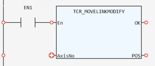

Axis Parameter.
Reads the current value of MOVELINK_MODIFY.
|
AxisNo: USINT; |
Axis number |
|
POS: LREAL; |
The current value of MOVELINK_MODIFY |
This function reads the current value of MVELINK_MODIFY, which allows MOVELINK motion commands to be modified whilst they are running by applying the specified positional offset.
(LREAL):=TCR_MOVELINKMODIFY(AxisNo:= (USINT));

Not available.